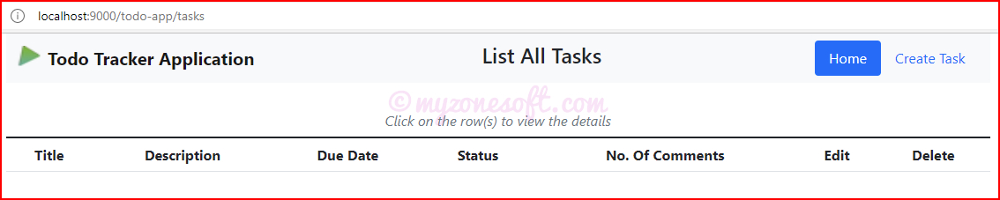
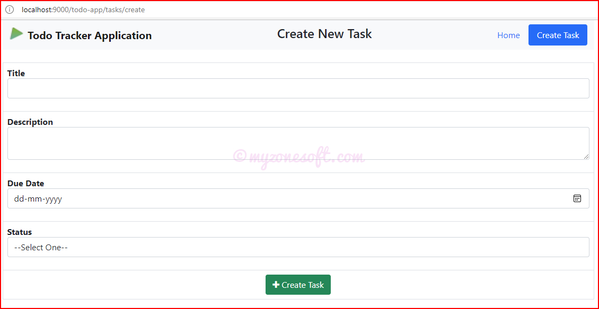
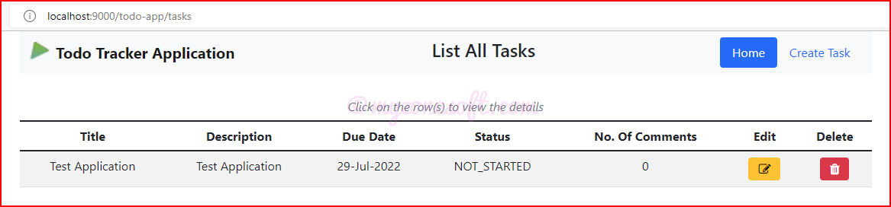
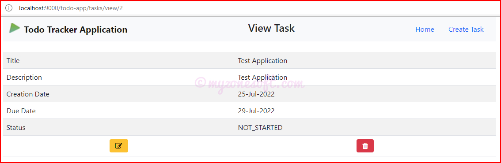
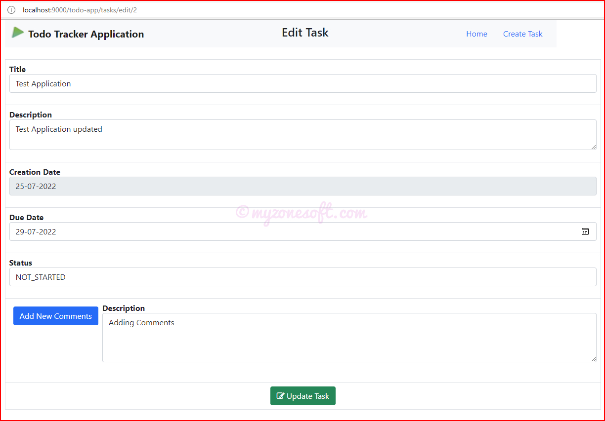
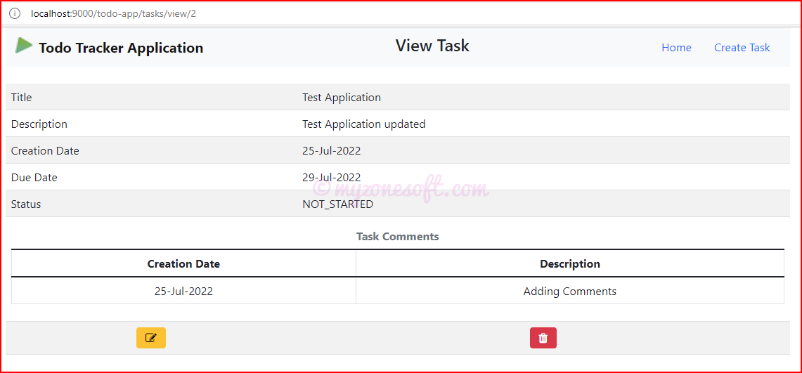
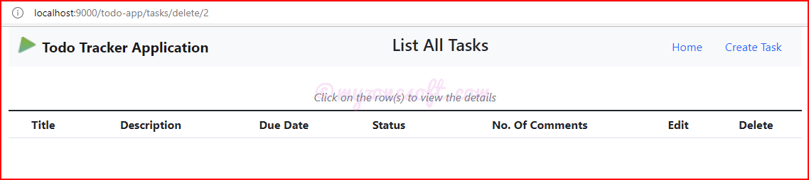

1@(title: String)(content: Html)
2<htmllang="en">
3 <head>
4 <title>Todo Tracker Application</title>
5<!-- Add the bootstrap css from public/css folder --> 6 <linkrel="stylesheet"type="text/css"href="@routes.Assets.versioned("css/bootstrap.min.css")">
7<!-- Add the font-awesome css from the cdn link directly --> 8 <linkhref="https://maxcdn.bootstrapcdn.com/font-awesome/4.7.0/css/font-awesome.min.css"rel="stylesheet">
9 </head>
10 <body>
11<!-- Start of navigation menu -->12 <divclass="container">
13 <navclass="navbar navbar-expand-lg navbar-light bg-light">
14 <divclass="container-fluid">
15 <ahref="@routes.TasksController.getAllTasks"class="navbar-brand">
16 <imgsrc="@routes.Assets.versioned("images/favicon.png")"alt=""width="30"height="24"class="d-inline-block align-text-top">
17 <b>Todo Tracker Application</b></a>
18 @* Here's where we render the page title `String`. *@
19 <h4>@title</h4>
20 <ulclass="nav nav-pills">
21 <liclass="nav-item"><ahref="@routes.TasksController.getAllTasks"class="nav-link"id="home"aria-current="page">Home</a></li>
22 <liclass="nav-item"><ahref="@routes.TasksController.getCreateForm"id="create"class="nav-link">Create Task</a></li>
23 </ul>
24 </div>
25 </nav>
26<!-- End of navigation menu -->27 <br/>
28 @* And here's where we render the `Html` object containing the page content. *@
29 @content
30 </div>
3132<!-- It is always advisable to add the script tags inside body tag toward the end for faster rendering of the page -->33<!-- Add the required js from public/js folder -->34<!-- Add the popper.js and jquery.js before the bootstrap.js -->35 <scriptsrc="@routes.Assets.versioned("js/popper.min.js")"></script>
36 <scriptsrc="@routes.Assets.versioned("js/jquery-3.6.0.min.js")"></script>
37 <scriptsrc="@routes.Assets.versioned("js/bootstrap.min.js")"></script>
38<!-- Add all the custom js in custom.js -->39 <scriptsrc="@routes.Assets.versioned("js/custom.js")"></script>
40 </body>
41</html>
Add the bootstrap.min.css and font-awesome.min.css files path to the href attribute of the link tags inside the head tag.
Add the jquery.min.js, popper.min.js and bootstrap.min.js files path to the src attribute of the script tags at the bottom of the body tag.
Place the popper.min.js and jquery.min.js before the bootstrap.min.js, as bootstrap.min.js requires jQuery for loading its contents.
It is always advisable to add the script tags inside body tag toward the end for faster rendering of the page.
We will add the navigation menu, using the standard bootstrap navigation navbar styling.
For the src attribute for script tags and href attribute for link tags, we add the path using @routes.Assets.versioned in Play framework. This would render the files that are in the /public folder, since we have the route mapping enabled like given below:
We shall update the existing views in the views.tasks folder to make a call to the layout template.
We will be removing the head section and also the closing body section in the file and replacing them with the call to layout template. It takes 2 parameters, title and html content.
Since we have created the Navigation Menu with Create Task tab, we will be removing the Create link from the Homepage.
We will be updating all the buttons with the relevant Font Awesome Icons.
We will move all the custom javascript methods to the custom.js and place it in the /public/js folder.
Each view files would have changes like below (highlighted lines).
We will move all the custom javascript methods to the custom.js and place it in the /public/js folder.
1// "Add New Comments" button toggle for adding new comment
2functionaddNewComments(){
3varlTable= document.getElementById("commentsTable");
4lTable.style.display= (lTable.style.display=="table") ?"none":"table";
5}
6 7//To enable the click on the row functionality, in the Homepage
8functionrowClick(iUrl){
9 document.location.href=iUrl;
10}
1112//To enable the active nav section in the menu
13$(function(){
14$('a').each(function(){
15if ($(this).prop('href') == window.location.href) {
16$(this).addClass('active'); $(this).parents('li').addClass('active');
17 }
18 });
19});
Refactored Views
Home Page
Now when we Stop, Compile and Run the Application Server, we will see the below refractored views.

Refactored Home page
Create Task Page
Click on the Create Task tab on the navigation menu, at the top.

Refactored Create page
Fill in the details and click on “Create Task” button, to create new task.

Refactored Home page after Task Creation
View Task Page
Click on the row to View the details.

Refactored View Page
Edit/Update Task Page
For Editing the task details, there are 2 options:
From the Homepage, click on Edit icon.
From View page, click on Edit icon.

Refactored Edit Page

Refactored View Page with Comments
Delete Task
For Deleting the task, there are 2 options:
From the Homepage, click on Delete icon.
From View page, click on Delete icon.

Refactored Home page after Task Deletion
Connecting the Database
Till now, we have seen the complete MVC Functionality of Play, Refactoring Views using Bootstrapwithout even persisting the data. Now, let us look at persisting the data in the database.
The Play Framework has a built-in H2 Database, along with support for JPA with Hibernate and other persistence frameworks.
Enable Play Ebean plugin
Play comes with the Ebean ORM for Persisting data in Java.
To enable it, add the Play Ebean plugin to your SBT plugins in project/plugins.sbt:
Play Ebean comes with two components, a runtime library that actually talks to the database, and an sbt plugin that enhances the compiled Java bytecode of your models for use with Ebean. Both of these components need to be configured so that Ebean knows where your models are.
Configuring the runtime library
The runtime library can be configured by putting the list of packages and/or classes that your Ebean models live in your application configuration file.
Since all our models are in the models package, add the following to conf/application.conf:
ebean.default= ["models.*"]
This defines a default Ebean server, using the default data source, which must be properly configured.
As you can see, we’ve added a find static field, defining a Finder for an entity of type Task with a Long identifier. This helper field is then used to simplify querying our model.
In the previous article, we have used the Hashmaps in the Service Class, to store the data. Hence we had adapted all our action methods to be in sync with that.
Now that we are persisting the data, we will update the Service Class to Store, Read, Edit and Delete the data from the database.
With this setup complete, we have come to the end of this article.
At the end of this article, we have seen how to enhance the application developed in the previous article, by:
Refactoring the Views using Bootstrap and jQuery, so that the Views are presented in a better way.
Connecting to the Database to persist the data, using Ebean ORM.
Complete code for this project can be found at GitHub here. Go ahead and clone it.
Instructions on how to clone and run the project are provided on the GitHub page.
About Prashanth Bhat
Prashanth Bhat has about 15+ years of Developing/Coding knowledge. He loves to work with Technology, learn new things and share his learnings with others. For comments/feedback you can reach here.